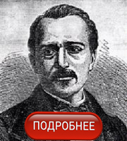
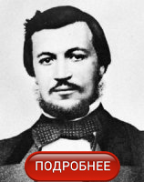

Двигатель – одно из основных составляющих автомобиля. Без изобретения двигателя автомобилестроение, скорее всего, остановилось в развитии сразу же после изобретения колеса. Рывок в истории создания автомобилей, произошел благодаря изобретению двигателя внутреннего сгорания. Это устройство стало реальной движущей силой, дающей скорость.Попытки создать устройство, подобное двигателю внутреннего сгорания, начались с 18 века. Созданием устройства, которое могло бы преобразовывать энергию топлива в механическую, занимались многие изобретатели.
Первыми в этой области были братья Ньепс из Франции. Они придумали прибор, который сами назвали «пирэолофор». В качестве топлива для данного двигателя должна была использоваться угольная пыль. Однако, данное изобретение так и не получило научного признания, и существовала, по сути, только в чертежах.
Первым успешным двигателем, который начал продаваться, был двигатель внутреннего сгорания бельгийского инженера Ж.Ж. Этьена Ленуара. Год рождения этого изобретения – 1858. Это был двухтактовый электрический двигатель с карбюратором и искровым зажиганием. Топливом для устройства служил каменноугольный газ. Однако изобретатель не учел потребность в смазке и охлаждении своего двигателя, поэтому он работал очень недолго. В 1863 году Ленуар переделал свой двигатель – добавил недостающие системы и в качестве топлива ввел в использование керосин.
Устройство было крайне несовершенным – сильно нагревался, неэффективно использовал смазку и топливо. Однако с помощью него ездили трехколесные автомобили, которые так же были далеки от совершенства.В 1864 году был изобретен одноцилиндровый карбюраторный двигатель, работающий от сгорания нефтепродуктов. Автором изобретения стал Зигфрид Маркус, он же представил общественности транспортное средство, развивающее скорость 10 миль в час. В 1873 году еще один инженер – Джордж Брайтон – смог сконструировать 2-х цилиндровый двигатель.
В 1876 году произошел рывок в индустрии создания двигателей внутреннего сгорания. Николас Отто впервые создал технически сложное устройство, которое эффективно преобразовывало энергию топлива в механическую энергию.
В 1883 году француз Эдуард Деламар разрабатывает чертеж двигателя, топливом для которого служит газ. Однако его изобретение существовало только на бумаге.1185 году в истории автомобилестроения появляется громкое имя – Готтлиб Даймлер. Он смог не только изобрести, но и запустить в производство прототип современного газового двигателя – с вертикально расположенными цилиндрами и карбюратором. Это был первый компактный двигатель, который к тому же способствовал развитию приличной скорости перемещения. Параллельно с Даймлером над созданием двигателей и автомобилей работал Карл Бенц.
В 1903 году предприятия Даймлера и Бенца объединились, дав начало полноценному предприятию автомобилестроения. Так началась новая эра, послужившая дальнейшему совершенствованию двигателя внутреннего сгорания.
Цитата